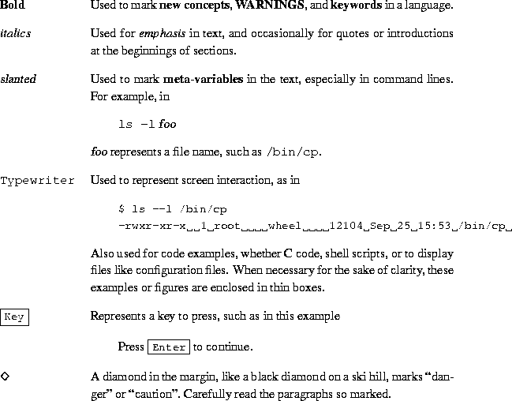

Linux Installation and Getting Started (LIGS) has been the shepherding work for countless new users of the Linux operating system. Linux continues to evolve and so, too, must this guide.
Matt Welsh, the original author, has turned the book over to the care and management of Specialized Systems Consultants, Inc. (SSC), publishers of Linux Journal, computer books, and references. Linux Installation and Getting Started is still covered by the GNU General Public License--it is still freely redistributable, like the operating system it describes. This new version becomes a collaborative effort of individuals separated by geography but brought together on the Internet, much like Linux itself. If you believe you could expand or update a section of Linux Installation and Getting Started or have something new and wonderful to add, please send e-mail to ligs@ssc.com and tell us how you'd like to contribute.
For this edition, we've added distribution-specific instructions for obtaining and installing S.u.S.E. Linux, Debian GNU/Linux, Linux Slackware, Caldera OpenLinux, and Red Hat Linux. Please read through the acknowledgements, and if you should meet someone named there on line or in person, thank them for the help.
Specialized Systems Consultants, Inc. (SSC)
February 1998
``You are in a maze of twisty little passages, all alike.''
Before you looms one of the most complex and utterly intimidating systems ever written. Linux, the free UNIX clone for the personal computer, produced by a mishmash team of UNIX gurus, hackers, and the occasional loon. The system itself reflects this complex heritage, and although the development of Linux may appear to be a disorganized volunteer effort, the system is powerful, fast, and free. It is a true 32-bit operating system solution.
My own experiences with Linux began several years ago when I sat down to figure out how to install the only ``distribution'' available at the time--a couple of diskettes made available by H. J. Lu. I downloaded a slew of files and read page upon page of loosely-organized installation notes. Somehow, I managed to install this basic system and get everything to work together. This was long before you could buy the Linux software on CD-ROM from worldwide distributors; before, in fact, Linux was able to access a CD-ROM drive. This was before XFree86, before Emacs, before commercial software support, and before Linux became a true rival to MS-DOS, Microsoft Windows, and OS/2 in the personal computer market.
You hold in your hands a map and guidebook to the world of Linux. It is my hope that this book will help you get rolling with what I consider to be the fastest, most powerful operating system for the personal computer. Setting up your own Linux system can be great fun--so grab a cup of coffee, sit back, and read on.
Matt Welsh
January 1994
Getting started with your own Linux system does not require a great deal of UNIX background. Many UNIX novices have successfully installed Linux on their systems. This is a worthwhile learning experience, but keep in mind that it can be frustrating. Moreover, once you are ready to delve into the more complex tasks of running Linux--installing new software, recompiling the kernel, and so forth--having background knowledge in UNIX is necessary.
However, simply by running your own Linux system you will learn the essentials of UNIX. This book helps you get started--Chapter 3 is a tutorial covering UNIX basics. Chapter 4 has information on Linux system administration. You may wish to read these chapters before attempting to install Linux at all--the information will prove to be invaluable should you run into problems.
Nobody can expect to go from UNIX novice to UNIX system administrator overnight. No implementation of UNIX is expected to be maintenance free. You must be prepared for the journey that lies ahead. Otherwise, if you're new to UNIX, you may very well become frustrated with the system.
Someone with years of experience in UNIX programming and system administration may still need assistance before he or she is able to pick up and install Linux. UNIX wizards must be familiar with certain aspects of the system before they dive in. Linux is neither a commercial UNIX system, nor attempts to uphold the same standards. While stability is an important factor in Linux development, it is not the only factor.
Perhaps more important is functionality. In many cases, new code becomes part of the standard kernel while it is still buggy and not functionally complete. The Linux development model assumes that it is more important to release code for users to test and use, than delay a release until it is complete. WINE (the Microsoft Windows Emulator for Linux) had an official alpha release before it was completely tested. The Linux community at large had a chance to work with the code, and those who found the alpha code good enough for their needs could use it. Commercial UNIX vendors rarely, if ever, release software this way.
If you have been a UNIX systems administrator for more than a decade, and have used every commercial UNIX system under the Sun (pun intended), Linux may take some getting used to. The system is very modern and dynamic. A new kernel is released every few weeks. New software is constantly being released. One day, your system may be completely up-to-date, and the next day the system may be in the Stone Age.
With all of this activity, how does one keep up with the ever-changing Linux world? For the most part, it is best to upgrade only those parts of the system which need upgrading, and only when you think it is necessary. For example, if you never use Emacs, there is little reason to continuously install new releases of Emacs on your system. Furthermore, even if you are an avid Emacs user, there is usually no reason to upgrade unless you need a feature that is present only in the next release. There is little or no reason to always be on top of the newest software versions.
We hope that Linux will meet or exceed your expectations for a homebrew UNIX system. At the very core of Linux is the spirit of free software, of constant development and growth. The Linux community favors expansion over stability, which is a difficult concept to swallow, especially after being steeped in the world of commercial UNIX. Expecting Linux to be perfect is unrealistic; nothing in the free software world ever is. We believe, however, that Linux is as complete and useful as any other implementation of UNIX.
This book is for personal computer users who want to install and use Linux. We assume that you have basic knowledge about personal computers and operating systems like MS-DOS, but no previous knowledge of Linux or UNIX.
Despite this, we strongly suggest that UNIX novices invest in one of the many good UNIX books out there. You still need UNIX know-how to install and run a complete system. No distribution of Linux is completely bug-free. You may be required to fix small problems by hand. Running a UNIX system is not an easy task, even with commercial versions of UNIX. If you're serious about Linux, bear in mind that it takes considerable effort and attention to keep the system running. This is true of any UNIX system. Because of the diversity of the Linux community and the many needs which the software attempts to meet, not everything can be taken care of for you all of the time.
This book contains the following chapters:
Chapter 1, Introduction to Linux, is a general introduction to Linux, its capabilities, and requirements for running it on your system. It also provides hints for getting help and reducing your stress level.
Chapter 2, Obtaining and Installing Linux, explains how to obtain and install Linux software, beginning with drive repartitioning, creating filesystems, and installing software packages. The chapter contains instructions that are meant to be general for any Linux distribution and relies for specifics on the documentation provided by your particular release.
Chapter 3, Linux Tutorial, is a complete introduction for UNIX novices. If you have previous UNIX experience, most of this material should be familiar.
Chapter 4, System Administration, introduces important concepts for system administration under Linux. This will be of interest to UNIX system administrators who want to know about the Linux-specific issues for running a system.
Chapters 5 and 6, X Windows and Networking, introduce a number of advanced options that Linux supports, like the X Window System and TCP/IP networking. We also provide a complete guide to configuring XFree86-3.1.
Appendix A, Sources of Linux Information, is a list of further documentation sources like newsgroups, mailing lists, on-line documents, and books.
Appendix B, FTP Tutorial and Site List, is a tutorial for downloading files from the Internet with FTP. This appendix also lists FTP archive sites that carry Linux software.
Appendix C, The GNU General Public License, is the license agreement under which Linux is distributed. It is important that Linux users understand the GPL. Many disagreements over the terms in describes have been raised.
This edition builds on the work of those who have gone before, and they are thanked below in Matt Welsh's original acknowledgement. Additionally, we owe thanks to Larry Ayers, Boris Beletsky, Sean Dreilinger, Evan Leibovitch, and Henry Pierce for contributing the information in Chapter 2 on S.u.S.E. Linux, Debian GNU/Linux, Linux Slackware, Caldera OpenLinux, and Red Hat Linux, respectively. David Bandel updated Chapter 2 and added a section describing a generic Linux installation. Vernard Martin updated and added to Chapter 5. Thanks are also due to Belinda Frazier for editing and to Jay Painter for the update to Chapter 4 on systems administration.
This book has been long in the making, and many people have contributed to the outcome. In particular, I would like to thank Larry Greenfield and Karl Fogel for their work on the first version of Chapter 3, and to Lars Wirzenius for his work on Chapter 4. Thanks to Michael K. Johnson for his assistance with the LDP and the LaTeX conventions used in this manual, and to Ed Chi, who sent me a printed copy of the book.
Thanks to Melinda A. McBride at SSC, Inc., who did an excellent
job of completing the index for Chapters 3, 4,
and  . I would also like to thank Andy Oram, Lar Kaufman,
and Bill Hahn at O'Reilly and Associates for their assistance with the
Linux Documentation Project.
. I would also like to thank Andy Oram, Lar Kaufman,
and Bill Hahn at O'Reilly and Associates for their assistance with the
Linux Documentation Project.
Thanks to Linux Systems Labs, Morse Telecommunications, and Yggdrasil Computing for their support of the Linux Documentation Project through sales of this book and other works.
Much thanks to the many Linux activists, including (in no particular order) Linus Torvalds, Donald Becker, Alan Cox, Remy Card, Ted T'so, H. J. Lu, Ross Biro, Drew Eckhardt, Ed Carp, Eric Youngdale, Fred van Kempen, and Steven Tweedie, for devoting so much time and energy to this project, and without whom there wouldn't be anything to write a book about.
Finally, special thanks to the myriad of readers who have sent their helpful comments and corrections; they are far too many to list here.
The Linux Documentation Project consists of a loose team of writers, proofreaders, and editors who are working on a set of definitive Linux manuals.
This manual is one of several which are distributed by the Linux Documentation Project. Other manuals include the Linux User's Guide, System Administrator's Guide, Network Administrator's Guide, and Kernel Hacker's Guide. These manuals are all available in LaTeX source and PostScript output format for anonymous FTP access at sunsite.unc.edu, in the directory /pub/Linux/docs/LDP.
We have attempted to use the following documentation conventions in this guide:
